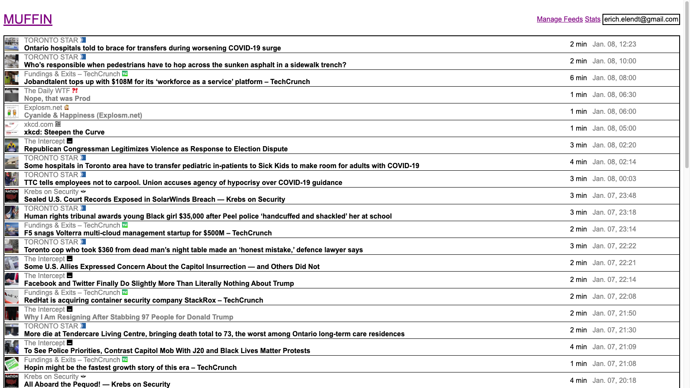

A super simple rss aggregator that I use to read news/blogs/comics. It's called muffin because it goes well with coffee.
Runs on django serving out artisan web pages.
A super simple rss aggregator that I use to read news/blogs/comics. It's called muffin because it goes well with coffee.
Runs on django serving out artisan web pages.
The iWork suite is a bleeding-edge SotA ML framework capable of training deep neural networks with up to 30 parameters.
Formula to define activations and gradients can be rapidly entered using Numbers' autofill feature making it easier than ever for developers to define their models inside a spreadsheet.
Apple's automation tool, AppleScript is heavily inspired by NLP (not to be confused with NLP) and the absence of ML tools/libraries gives developers complete creative freedom to write their own optimizers.
And best of all, its only 16000 times slower than pytorch!